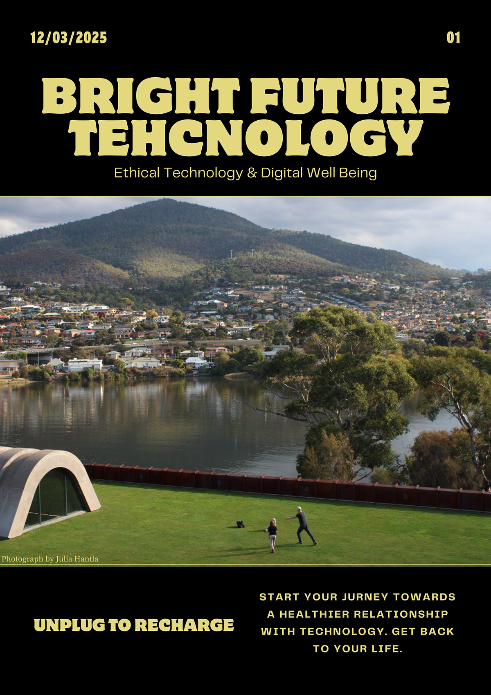
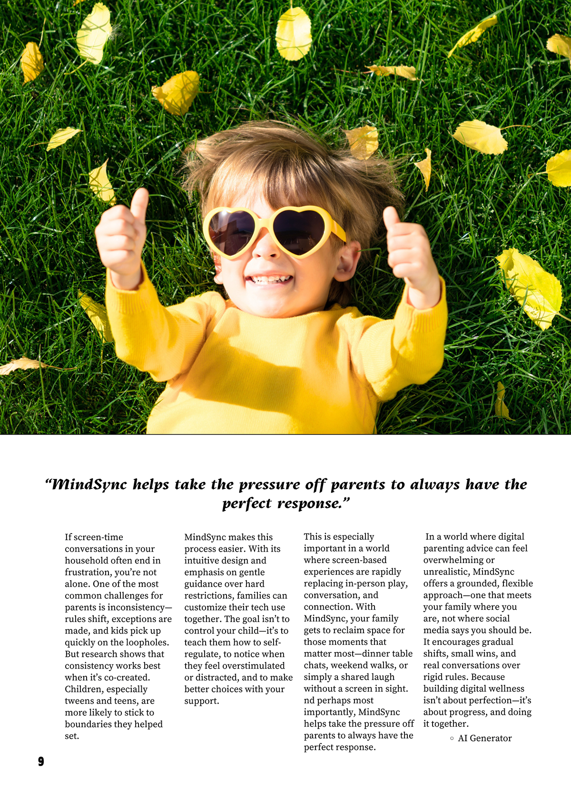
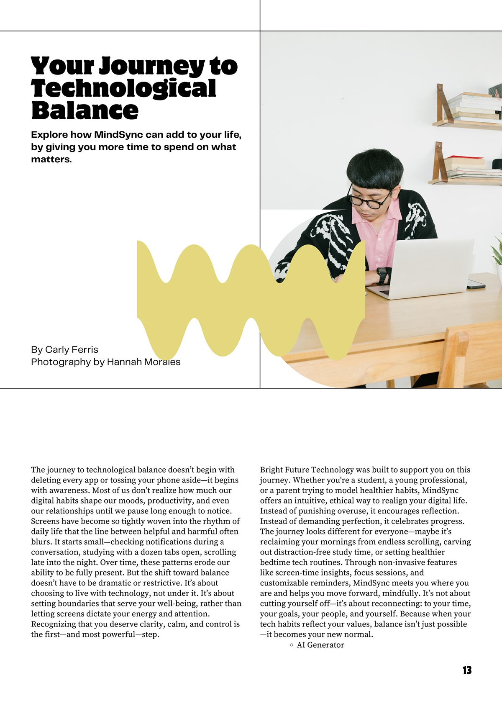
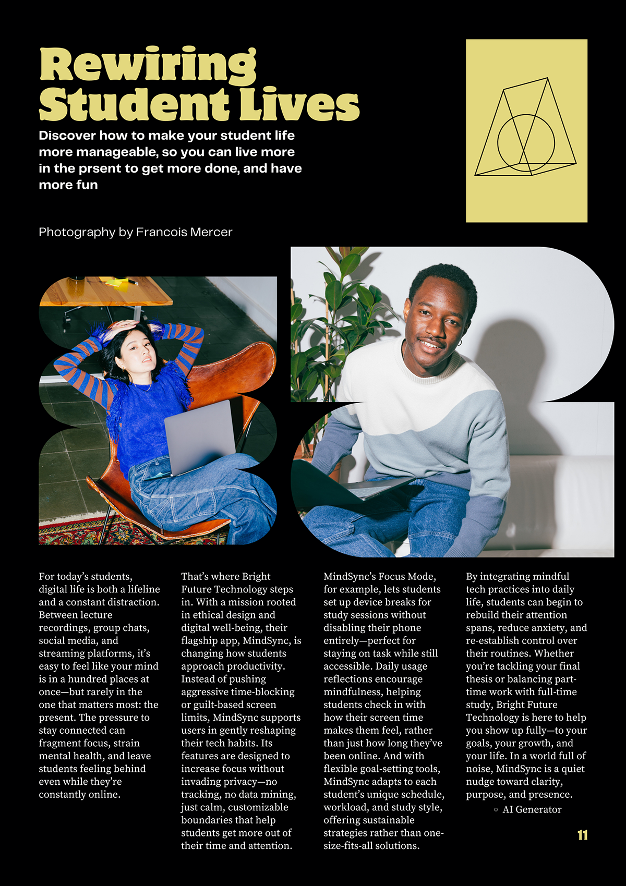
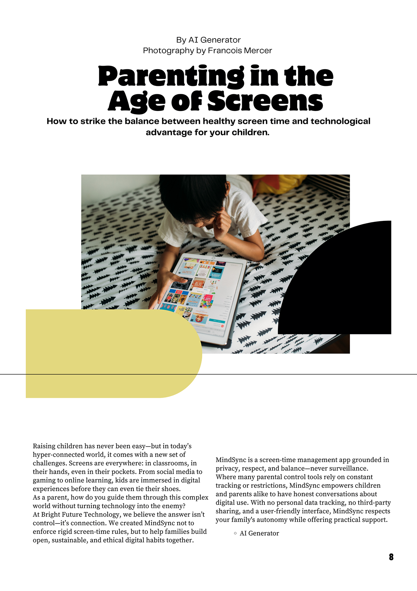
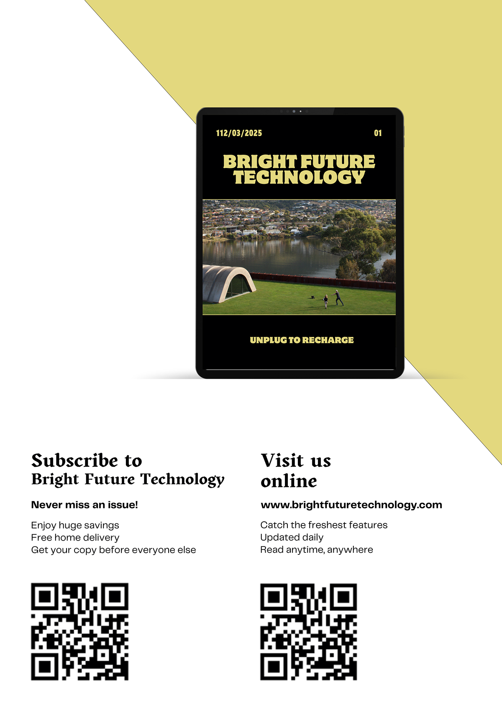

An editorial system for a technology brand, turning dense ideas into pages people actually want to read, plus motion built for the scroll.

Overview
Bright Future Technology needed editorial that could carry a point of view, a layout system with enough structure to stay credible and enough personality to stay readable.
I designed a multi-page spread with a clear typographic hierarchy, then translated the look into a short motion asset so the brand reads consistently from page to feed.
A look at the world
Spreads · Motion · Mood


The Challenge
Technology content tends to read as either too dry or too hype. The goal was a middle path: an editorial voice with rhythm, white space, and pacing that earns attention instead of demanding it.
My role: I owned layout, typographic system, image direction, and the motion adaptation.

Creative Process
Execution

"The pages feel considered, like every spread knows exactly what it's saying."
Placeholder, Bright FutureOutcome
A repeatable editorial system that flexes across formats, and a motion adaptation that keeps the brand consistent everywhere it shows up.